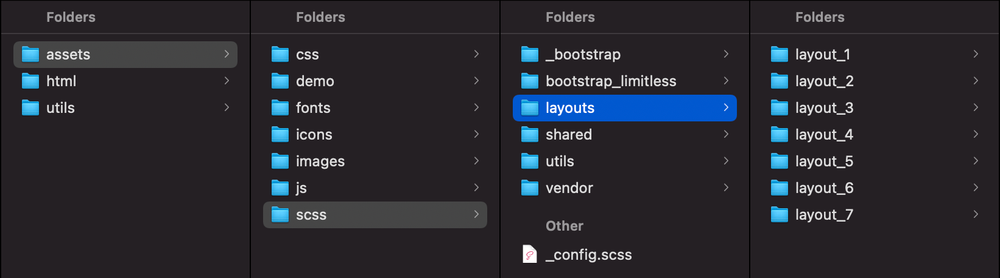
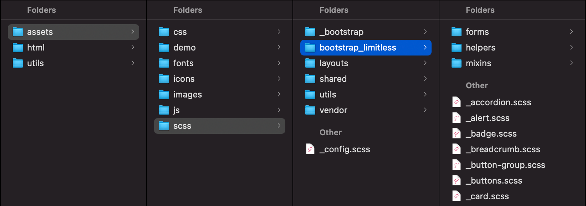
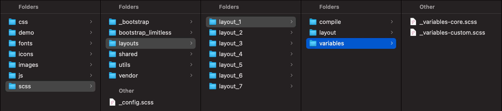
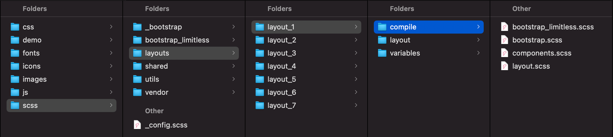
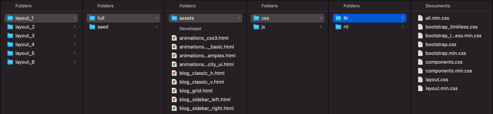
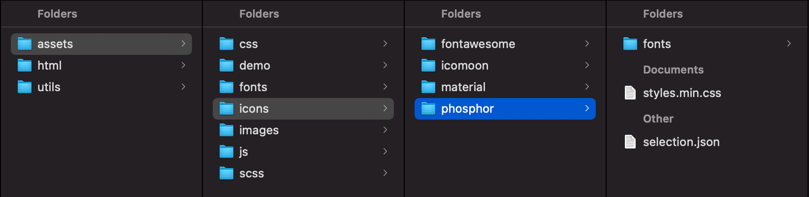

SCSS overview
Overview
All Limitless styles are based on SCSS pre-processor - it extends the CSS language, adding features that allow variables, mixins, functions and many other techniques that allow you to make CSS that is more maintainable, themable and extendable. In total there are 180 fully commented SCSS files, including: Bootstrap components core, Bootstrap core overrides, layout and component related files. All files are properly divided into categories and stored inside nested folders:
Screenshot - scss structure
Editing
To edit SCSS files, use any code editor that supports .scss file extensions. To include or exclude components from your project, edit main configuration file _config.scss located in assets/scss/ folder. Starting from version 3.*, config file includes only components, layout and theme specific configs are not required anymore, but you can add any custom rule you need and better to use that file, since it's imported by all SCSS files, directly and indirectly.
Screenshot - main files to edit
/* ------------------------------------------------------------------------------
*
* # Global configuration
*
* Here you can change main theme, enable or disable certain components and
* optional styles. This allows you to include only components that you need.
*
* 'true' - enables component and includes it to main CSS file.
* 'false' - disables component and excludes it from main CSS file.
*
* ---------------------------------------------------------------------------- */
//
// Core settings
// ------------------------------
//
//** Icon sets: 'Phosphor', 'icomoon', 'material-icons', 'Font Awesome 5 Free'
$icon-font-family: 'Phosphor' !default;
$icon-font-size: 1.25rem !default;
$icon-font-size-lg: $icon-font-size * 1.2 !default;
$icon-font-size-sm: $icon-font-size * .8 !default;
//
// Layout
// ------------------------------
//
//** Sidebar navigation types
$enable-sidebar-nav-icons-reverse: true !default;
$enable-sidebar-nav-bordered: true !default;
//** Boxed layouts
$enable-boxed: true !default;
//
// Components
// ------------------------------
//
//** Forms
$enable-select2: true !default;
$enable-multiselect: true !default;
$enable-autocomplete: true !default;
$enable-passy: true !default;
$enable-validation: true !default;
$enable-wizard: true !default;
$enable-dual-listbox: true !default;
$enable-tokenfield: true !default;
//** Editors
$enable-quill: true !default;
$enable-ckeditor: true !default;
$enable-trumbowyg: true !default;
$enable-ace: true !default;
//** Pickers
$enable-daterange: true !default;
$enable-datepicker: true !default;
$enable-spectrum: true !default;
//** File uploaders
$enable-plupload: true !default;
$enable-fileinput: true !default;
$enable-dropzone: true !default;
//** Notifications
$enable-noty: true !default;
$enable-sweetalert: true !default;
//** Sliders
$enable-noui: true !default;
$enable-ion: true !default;
//** Charts
$enable-charts: true !default;
$enable-d3: true !default;
$enable-c3: true !default;
//** Maps
$enable-maps: true !default;
$enable-echarts-maps: true !default;
$enable-leaflet-maps: true !default;
//** Tables
$enable-datatable: true !default;
$enable-datatable-select: true !default;
$enable-datatable-scroller: true !default;
$enable-datatable-row-reorder: true !default;
$enable-datatable-responsive: true !default;
$enable-datatable-keytable: true !default;
$enable-datatable-fixed-columns: true !default;
$enable-datatable-colreorder: true !default;
$enable-datatable-buttons: true !default;
$enable-datatable-autofill: true !default;
//** Page kits
$enable-blog: true !default;
$enable-timeline: true !default;
$enable-login: true !default;
$enable-error: true !default;
$enable-profile: true !default;
$enable-tasks: true !default;
$enable-inbox: true !default;
$enable-chat: true !default;
//** Misc
$enable-fab: true !default;
$enable-glightbox: true !default;
$enable-fancytree: true !default;
$enable-fullcalendar: true !default;
$enable-image-cropper: true !default;
$enable-dragula: true !default;
$enable-headroom: true !default;
$enable-prism: true !default;
$enable-demo: true !default;
$enable-ribbon: true !default;
Main files
When a new Bootstrap version comes out, it's very important to keep upgrading process as simple as possible. That is why all core Bootstrap files remain untouched, all necessary changes need to be done in separate file with the same name in assets/scss/bootstrap_limitless/ folder. This allows us to override default bootstrap CSS file after compilation.
I strongly recommend not to make any changes in default Bootstrap SCSS files, but use files from assets/scss/bootstrap_limitless/ folder instead. All these files will be overridden in every future update. This will simplify your upgrading process in the future as well.
Screenshot - Bootstrap overrides
Variables
If you need to change a default theme, you can edit template's variables - all main colors, spacings and other styles are located there and you can change nearly everything. Main template's variables are stored in 2 files: _variables-core.scss and _variables-custom.scss, located in assets/scss/[layout]/variables/ folder. You can also edit CSS variables either in your own CSS file or in SCSS source files.
_variables-core.scsscontains default Bootstrap variables overrides only_variables-custom.scsscontains all other variables used in the template.
Screenshot - variables
Compiling
There are tons of different applications and extensions available for SCSS compilation, but not all of them support all build tools used in Limitless. Previous versions supported desktop apps like Koala or Crunch, starting from version 2.0 onwards desktop applications are not supported, so use them at your own risk.
By default, Limitless template uses 5 separate compiled CSS files - all.min.css, bootstrap.css, bootstrap_limitless.css, components.css and layout.css. CSS files have same names as 4 main SCSS files located in assets/scss/layouts/[layout]/compile/ folder. In fact, these 4 css files are automatically generated from main SCSS files and 1 is a production version that includes all those 4. So to compile CSS files, use only these 4 main scss files:
bootstrap.scss- Bootstrap corebootstrap_limitless.scss- Bootstrap core overrideslayout.scss- layout basecomponents.scss- all template components and plugins, except Bootstrap ones
First 3 files are required for proper styling. Do not edit any of these files if you don't need to add something new to them, instead use _config.scss file to include/exclude existing styles from components.css. Starting from version 3.0, color system is not optional anymore and is now a part of the core, all colors can be found in _variables-core.scss file.
Keep in mind that /compile/ folder is sensitive to files - gulp file is configured to dynamically compile all files from this folder into separate CSS files and additionally merges all into 1.
Screenshot - 5 main files
SCSS files
SCSS folder includes all files responsible for template styling - core, layout, components, plugins, page kits etc. All files are properly structured according to the category: _bootstrap - core styles of Bootstrap framework; layouts - all layout-specific styles; shared - styles that are used across all layouts; bootstrap-limitless - Limitless overrides of Bootstrap core styling loaded on top of original ones; utils - some additional utilities; and vendor - main template components, custom pages and plugins.
4 main files that import all other files are in a separate folder - bootstrap.scss, components.scss, bootstrap_limitless.scss and layout.scss. If you need to include or exclude any of existing files, make changes in _config.scss file. But if you need to add a new one, feel free to edit them. Below is the table with grouped SCSS files used in the template:
Bootstrap core
Contains 50 main file, 10 helpers and 26 mixins. File bootstrap.scss exists in 2 locations - in /_bootstrap/ and in /layouts/[layout]/compile/ folders. Editing bootstrap.scss any of those 2 files is not recommended since it's a core functionality and it might affect other components.
| File name | Description | |
|---|---|---|
| Main files | ||
forms/_floating-labels.scss |
Floating labels component | |
forms/_form-check.scss |
Form controls - checkbox, radio button and switch | |
forms/_form-control.scss |
Input fields | |
forms/_form-range.scss |
Range input | |
forms/_form-select.scss |
Single and multiple selects | |
forms/_form-text.scss |
Helper text | |
forms/_input-group.scss |
Input with leading and trailing button/icon/text | |
forms/_labels.scss |
Form labels | |
forms/_validation.scss |
Form validation | |
_accordion.scss |
Accorsion component | |
_alert.scss |
Alert component | |
_badge.scss |
Badges component | |
_breadcrumbs.scss |
Breadcrumbs component | |
_button-group.scss |
Button groups | |
_buttons.scss |
Button stylings | |
_card.scss |
Cards component | |
_carousel.scss |
Carousel component | |
_close.scss |
Close button | |
_containers.scss |
Layout containers | |
_dropdowns.scss |
Dropdown menu component | |
_forms.scss |
File with form imports | |
_functions.scss |
Main SASS functions used in Bootstrap | |
_grid.scss |
Responsive mobile-first grid | |
_helpers.scss |
File with helpers imports | |
_images.scss |
Image styling | |
_list-group.scss |
List group nav component | |
_maps.scss |
All SCSS maps, moved from _variables.scss in v.5 | |
_mixins.scss |
Mixins loading file | |
_modals.scss |
Modal dialogs | |
_nav.scss |
Tab, pill and other navs | |
_navbar.scss |
Navbar | |
_offcanvas.scss |
Offcanvas (sliding panel) component | |
_pagination.scss |
Pagination component | |
_placeholders.scss |
Preloading animation component | |
_popover.scss |
Popovers component | |
_progress.scss |
Progress bars component | |
_reboot.scss |
Reset default CSS | |
_root.scss |
Root level styles | |
_spinners.scss |
Spinners styling | |
_tables.scss |
Tables styling | |
_toasts.scss |
Toast messages styling | |
_tooltip.scss |
Tooltip component | |
_transitions.scss |
Default transitions | |
_type.scss |
Typography, page header and contextual backgrounds | |
_utilities.scss |
Utilities | |
_variables.scss |
Main variables | |
bootstrap-grid.scss |
Import files for grid | |
bootstrap-reboot.scss |
Import other files for proper reboot | |
bootstrap-utilities.scss |
Import utilities | |
bootstrap.scss |
Import all files | |
| Bootstrap mixins | ||
_alert.scss |
Alerts with color options | |
_backdrop.scss |
Backdrop color and animation for modals | |
_border-radius.scss |
Border radius: top, bottom, left, right | |
_box-shadow.scss |
Box shadow config | |
_breakpoints.scss |
Breakpoints configuration | |
_buttons.scss |
Buttons with color and sizing options | |
_caret.scss |
Caret directions | |
_clearfix.scss |
Clear and reset floating | |
_color-scheme.scss |
Mixin for adding dark theme elements | |
_container.scss |
Layout containers | |
_forms.scss |
Form control validation | |
_gradients.scss |
Gradient options | |
_grid.scss |
Grid columns, container and offsets | |
_image.scss |
Responsive and retina images | |
_list-group.scss |
List group color variants | |
_lists.scss |
List styles | |
_pagination.scss |
Pagination sizes | |
_reset-text.scss |
Text reset | |
_resize.scss |
Resize elements | |
_table-variants.scss |
Table row styling variants | |
_text-truncate.scss |
Long text truncate | |
_transition.scss |
Core transitions | |
_utilities.scss |
Core mixin for utility generation | |
_visually-hidden.scss |
Visibility mixins | |
| Bootstrap helpers | ||
_clearfix.scss |
Clear floating | |
_color-bg.scss |
Text color in containers with dark backgrounds | |
_colored-links.scss |
Text link colors | |
_positoin.scss |
Position of elements | |
_ratio.scss |
Video axpect ratio | |
_stacks.scss |
Horizontal and vertical stacks | |
_stretched-links.scss |
Full size links | |
_text-truncation.scss |
Disable text wrapping and limit its width | |
_visually-hidden.scss |
Elements that are visually hidden | |
_vr.scss |
Vertical rule | |
Template overrides
Contains 26 modified .scss files from assets/scss/_bootstrap/ folder. Most of the files include extended components functionality, options and styles. If you want to make any changes in these files, feel free to do so. These files are required.
| File name | Description | |
|---|---|---|
| Forms | ||
forms/_floating-labels.scss |
Floating labels in form inputs | |
forms/_form-check.scss |
Checkbox, radio button and switch | |
forms/_form-control.scss |
Input fields and textarea | |
forms/_form-select.scss |
Single and multiple select | |
forms/_labels.scss |
Form labels | |
| Helpers | ||
helpers/_colored-links.scss |
Text links in various colors | |
| Mixins | ||
mixins/_alert.scss |
Alert component mixin | |
mixins/_buttons.scss |
Button component mixin | |
mixin/_caret.scss |
Caret element overrides | |
mixin/_color-scheme.scss |
Overrides for light/dark color themes | |
mixin/_forms.scss |
Form component overrides | |
mixin/_table-variants.scss |
Table component overrides | |
| Main files | ||
_accordion.scss |
Accordion component overrides | |
_alert.scss |
Alert component | |
_badge.scss |
Badges component | |
_breadcrumbs.scss |
Breadcrumbs component | |
_button-group.scss |
Button groups | |
_buttons.scss |
Button stylings | |
_card.scss |
Cards component | |
_close.scss |
Close button | |
_code.scss |
Inline and blocks of code | |
_dropdowns.scss |
Dropdown menus | |
_forms.scss |
File with form files import | |
_helpers.scss |
File with helper files import | |
_images.scss |
Image specific overrides and additions | |
_list-group.scss |
List group nav component | |
_maps.scss |
Overrides of default Bootstrap maps. Mostly related to dark theme support | |
_mixins.scss |
Mixins loading file | |
_modal.scss |
Modal dialogs | |
_nav.scss |
Tab, pill and other navs | |
_navbar.scss |
Navbar component | |
_offcanvas.scss |
Offcanvas component | |
_pagination.scss |
Pagination component | |
_popover.scss |
Popovers component | |
_reboot.scss |
Reset default CSS | |
_root.scss |
CSS variables overrides | |
_spinners.scss |
Spinner component | |
_tables.scss |
Tables styling | |
_toasts.scss |
Toasts component | |
_tooltip.scss |
Tooltip component | |
_transitions.scss |
Additional transitions | |
_type.scss |
Typography, page header and contextual backgrounds | |
_utilities.scss |
SCSS utilities. If you need to add new utilities, do it in this file | |
Components
Contains 83 .scss files. All these files are responsible for 3rd party libraries styling and functionality: plugins, extensions, custom page kits, charts etc. Feel free to edit any of these files. This set also includes demo styles that are included by default for demonstration purposes only. It's recommended to remove _demo.scss file in production.
| File name | Description | |
|---|---|---|
| Charts | ||
shared/charts/charts.scss |
Charts base | |
shared/charts/c3.scss |
C3.js visualization library | |
shared/charts/d3.scss |
D3.js visualization library | |
| Content | ||
shared/content/ribbon.scss |
Corner ribbon component | |
| Icons (4 sets) | ||
shared/icons/*/base.scss |
Basic configuration | |
shared/icons/*/icons.scss |
List of icons | |
shared/icons/*/mixins.scss |
Mixins for icon set configuration | |
shared/icons/*/variables.scss |
List of icon variables | |
shared/icons/*/compile/styles.scss |
File for compilation | |
| Maps | ||
shared/maps/maps.scss |
Common styles for all maps | |
shared/maps/echarts-maps.scss |
ECharts maps | |
shared/maps/leaflet-maps.scss |
Leaflet maps | |
| Page kits | ||
shared/pages/blog.scss |
Blog pages | |
shared/pages/chats.scss |
Chat layouts and options | |
shared/pages/inbox.scss |
Mail system templates | |
shared/pages/login.scss |
Login and registration pages | |
shared/pages/profile.scss |
User profiles | |
shared/pages/timelines.scss |
Timeline directions and styles | |
| Editors | ||
forms/editors/_ace.scss |
Ace code editor | |
forms/editors/_quill.scss |
Quill text editor | |
forms/editors/_trumbowyg.scss |
Trumbowyg text editor | |
forms/editors/_ckeditor.scss |
CKEditor text editor | |
| Form plugins | ||
forms/_autocomplete.scss |
Form autocomplete | |
forms/_dual-listbox.scss |
Dual multiple select boxes | |
forms/_multiselect.scss |
Bootstrap multiselect | |
forms/_select2.scss |
Single and multiple Select2 selects | |
forms/_tokenfield.scss |
Tokenfield for Bootstrap | |
forms/_validation.scss |
Form validation | |
forms/_wizard.scss |
Form wizard | |
| File uploaders | ||
forms/uploaders/_dropzone.scss |
Dropzone - HTML5 single and multiple file uploader | |
forms/uploaders/_file-input.scss |
Bootstrap file input - single and multiple file uploader | |
forms/uploaders/_plupload.scss |
Plupload - file uploader with multiple runtimes | |
| Misc plugins | ||
misc/_fab.scss |
Floating action buttons | |
misc/_fancytree.scss |
Fancytree - dynamic multi level tree view | |
misc/_fullcalendar.scss |
Fullcalendar - event calendar extension | |
misc/_glightbox.scss |
Lightbox plugin | |
misc/_image-cropper.scss |
Image cropper extension | |
| Notifications | ||
notifications/_sweet-alerts.scss |
Nice looking alerts and dialogs | |
notifications/_noty.scss |
Noty - yet another notification library | |
| Pickers | ||
pickers/_pdatepicker.scss |
Date picker plugin | |
pickers/_daterange.scss |
Date range picker | |
pickers/_spectrum.scss |
Spectrum - color picker | |
| Sliders | ||
sliders/_noui-slider.scss |
NoUI slider library | |
sliders/_ion-range-slider.scss |
ION range slider library | |
| Tables | ||
tables/_gridjs.scss |
Grid.js - javascript data grid | |
tables/datatables/_datatable-autofill.scss |
Datatable extension - autofill | |
tables/datatables/_datatable-buttons.scss |
Datatable extension - buttons | |
tables/datatables/_datatable-columns-reorder.scss |
Datatable extension - columns reorder | |
tables/datatables/_datatable-fixed-columns.scss |
Datatable extension - fixed columns | |
tables/datatables/_datatable-keytable.scss |
Datatable extension - keytable | |
tables/datatables/_datatable-responsive.scss |
Datatable extension - responsive table | |
tables/datatables/_datatable-rows-reorder.scss |
Datatable extension - rows reorder | |
tables/datatables/_datatable-scroller.scss |
Datatable extension - scroller | |
tables/datatables/_datatable-select.scss |
Datatable extension - select | |
tables/datatables/_datatables.scss |
Datatables base | |
| UI plugins | ||
ui/_dragula.scss |
Drang and drop library | |
ui/_headroom.scss |
Headroom - hideable navbars | |
ui/_prism.scss |
Prism - syntax highlighter | |
| Other files | ||
vendor/_demo.scss |
Styles used in live preview | |
utils/_helpers.scss |
Helper classes | |
utils/_ll_functions.scss |
Custom template functions | |
utils/_ll_mixins.scss |
Custom template mixins | |
| Core | ||
layouts/*/variables/_variables-core.scss |
Bootstrap variables overrides | |
layouts/*/variables/_variables-custom.scss |
Additional variables | |
layouts/*/layout/_content.scss |
Template content's base | |
layouts/*/layout/_header.scss |
Page header | |
layouts/*/layout/_boxed.scss |
Boxed layout | |
layouts/*/layout/_sidebar.scss |
Sidebars with navigation | |
| Main files for compilation | ||
layouts/*/compile/_bootstrap.scss |
Main bootstrap SCSS file | |
layouts/*/compile/_bootstrap-limitless.scss |
Bootstrap overrides | |
layouts/*/compile/_layout.scss |
Layout base | |
layouts/*/compile/_components.scss |
Template components | |
CSS files
Files overview
Limitless template includes 4 mandatory compiled CSS files and 1 additional concatenated file, which is included in all pages. You can use them either separately or all together, but bear in mind that file ordering matters. Limitless layouts include both compressed and uncompressed CSS files.
bootstrap.css,*.min.css- Bootstrap core, always use minifiedbootstrap_limitless.css,*.min.css- Bootstrap core overrideslayout.css,*.min.css- layout basecomponents.css,*.min.css- all template components and pluginsall.min.css- everything
Note: both minified and unminified CSS files are stored in the same folder, because paths to images and font files are similar in both versions. If you want to store source or minified files into different folders, don't forget to change those paths. Also feel free to remove unnecessary CSS files if you don't use them. I strongly suggest not to make changes directly in CSS, but do it in SCSS files instead to avoid problems with upgrading to newer versions. If you need any help with compiling CSS, raise a support request.
Screenshot
CSS editing
Since main styling source is SCSS files kit, I strongly recommend to use minified versions of all CSS files included in the package and not to change CSS files directly. Edit SCSS files instead, this will help you to keep all your changes in future updates, because changes are getting added to SCSS files first, then SCSS files need to be re-compiled and detailed instructions about what needs to be changed and where it should be done in SCSS files only are provided.
CSS files are generated dynamically from SCSS files. If you prefer CSS over SCSS, create a new CSS file, store your code in there and include a link to it after other files.
Icon fonts
All icon font styles are also stored in SCSS files, you can find them in scss/shared/icons/ folder. All icon sets have same file structure and same compilation logic. Gulp file includes a separate task that compiles styles.scss file into styles.min.css, which is used in the template. You can combine multiple tasks in Gulp or any other compiler and include icon font in the main flow. Just make sure all file paths are correct.
Screenshot
